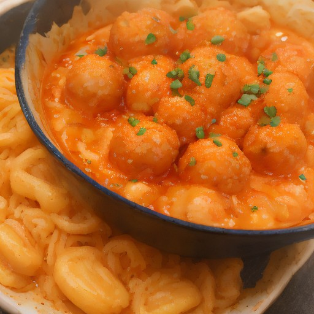

軽食
とろけるチーズ×タッカルビチキン！悪魔的甘酸っぱさ！チーズボール風！

とろけるチーズとタッカルビチンの意外性あふれる組み合わせ！クリーミーでスパイシーなチーズボール風。SNSで話題沸騰間違いなし！
💡 こんな時・こんな人におすすめ！
パーティーやディナーのサイド dishes、お酒との相性抜群！
📋 必要な材料（ポストイット風）
材料リスト 1
- チーズボール100g
- タッカルビチキン200g
- 醤油大さじ1
材料リスト 2
- 砂糖大さじ1
- パクチー適量
🍳 作り方ステップ
1
チーズボールを1cm角に丸め、タッカルビチキンを一口サイズにカットする。
2
チーズボールとタッカルビチキンを醤油、砂糖で味付けする。
3
チーズボールとタッカルビチキンを、パクチーで飾って皿に盛り付ける。
4
完成！